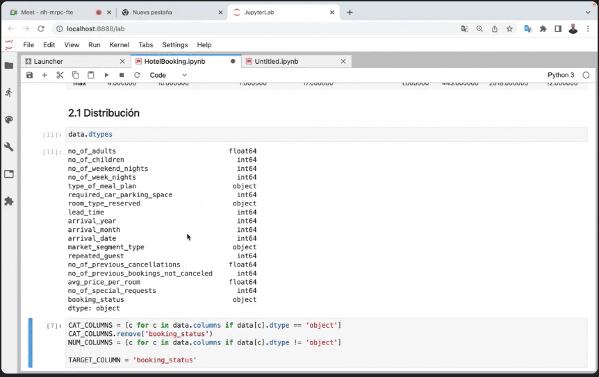

Acercamiento al Machine Learning
Post info
- Category: Machine Learning
- Except: Charla con Abraham Requena sobre Machine Learning
- Post date: Marzo 29th 2023
- Hashtags: #machinelearning | #bigdata | #python
En el artículo de hoy voy a contar cómo fue mi experiencia en una charla que tuvimos sobre Machine Learning, en la que yo conocía algunos datos a través de leer y escuchar podcast sobre informática pero nunca había ahondado mucho sobre el tema. Se agradece muchísimo poder contar con profesionales que, de forma altruista, den su visión y experiencia a diferentes campos de la informática.
El pasado 29 de Marzo tuvo lugar una interesante charla sobre Machine Learning, impartida por el Ingeniero Informático Abraham Requena Mesa. Durante la charla, se realizó una demostración utilizando el software JupiterLab para analizar los datos de un hotel, utilizando librerías como Panda y Numpy. El proceso de Data Wrangling o Data Cleaning se llevó a cabo para analizar la distribución de datos, valores missings, codificación de variables categóricas y correlación. Posteriormente, se realizó un entrenamiento del modelo y evaluación del mismo, dando ejemplos sobre su aplicación en el mundo empresarial.
Captura del ejemplo visto en la charla sobre el análisis de datos de un hotel en JupiterLab.
Como todas las charlas que hemos tenido, Requena explicó primero en pizarra los elementos claves para entender la práctica que tenía preparada. En ella hizo hincapié en modelos matemáticos de distribución de datos para que entendiéramos la importancia de las agrupaciones y su sentido en el análisis y, obviamente, su impacto en el mundo empresarial. Nos enumeró algunos recursos que fácilmente podíamos encontrar en internet aunque recomendó que parásemos en Kaggle, una plataforma de training sobre Machine Learning con multitud de ejemplos reales que son muy interesantes (sin duda, lo reservo para este gran verano de 2023).
En cuanto a la orientación laboral, para aquellos interesados en esta área, la charla puede haber servido como una herramienta útil para tomar una decisión más informada sobre su futuro profesional. En lo personal, considero que el análisis de datos y el Machine Learning pueden ser una oportunidad muy interesante para quienes disfrutan interpretando datos y descubriendo información valiosa que se puede utilizar para obtener rédito económico.
Parámetros usados para el análisis de datos de este ejercicio. Según el ponente podemos encontrarnos miles de parámetros para que el estudio sea más exacto.
Respecto al proceso de especialización en el área de Machine Learning, la charla fue muy útil para entender cómo el grado de especialización va aumentando cuando se va profundizando en esta área. Es importante tener en cuenta que para destacar en esta área, es necesario tener una base sólida en matemáticas y programación, y continuar aprendiendo de forma constante, aspirar a ser un Leonardo da Vinci en esta área es posible, aunque requerirá mucho tiempo, dedicación y esfuerzo.
En cuanto al balancear las áreas de especialización, dependerá de los intereses y habilidades de cada individuo. Si bien es importante guiarse por donde haya puestos de trabajo, también es necesario tener en cuenta que los trabajos en tecnología están en constante evolución y siempre habrá nuevas áreas emergentes. Por lo tanto, es importante elegir una especialización que sea interesante y desafiante, ya que esto ayudará a mantenerse motivado y comprometido con el trabajo.
En general, la charla fue muy enriquecedora y útil para quienes buscan profundizar en el área de Machine Learning. Personalmente, aprendí mucho sobre el proceso de análisis de datos y el papel que desempeña el Machine Learning en el mundo empresarial. Recomiendo esta charla a cualquier persona interesada en esta área y agradezco a Abraham Requena por compartir su conocimiento y experiencia con nosotros.